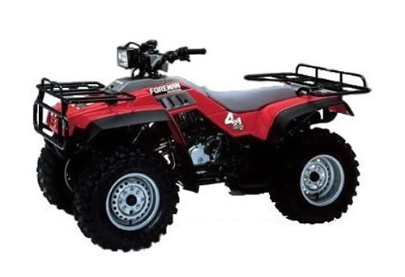
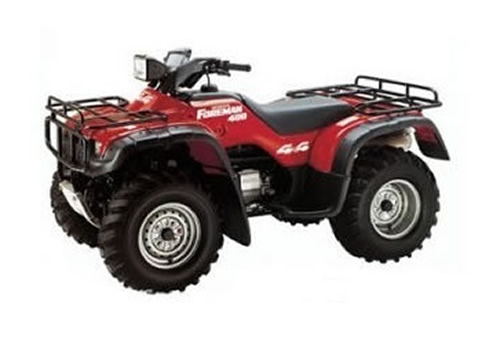
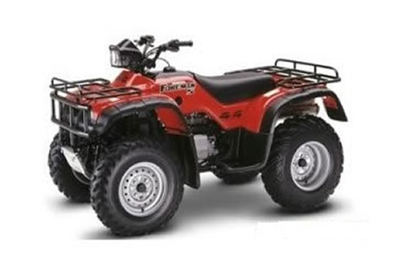
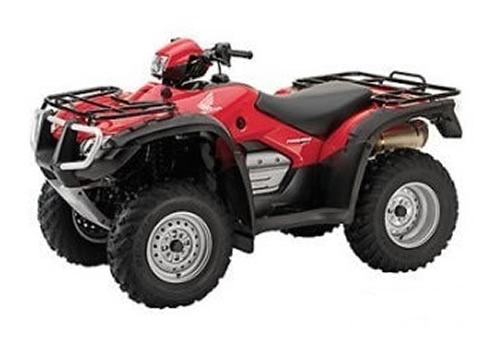
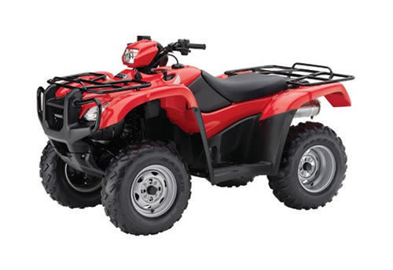
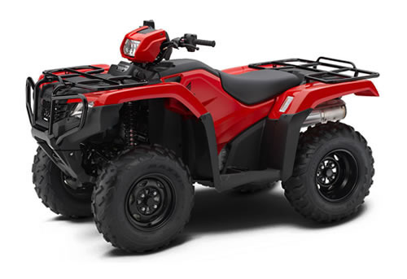

| Honda FourTrax 350 / Foreman 350D service manual repair 1986-1989 | |
 |
Instant download of the factory repair manual for the 1986-1987 Honda FourTrax 350 and 1987-1989 Honda TRX350D Foreman atvs. 304 pages.
Models covered: 1986 Honda Fourtrax 350, 1987 Honda Fourtrax 350, 1987 Honda Foreman 350D, 1988 Honda Foreman 350D, 1989 Honda Foreman 350D |
 |
| Honda Foreman 400 service manual repair 1995-2003 TRX400 | |
 |
Instant download of the factory repair manual for the 1995-2003 Honda Foreman 400 atv. 370 pages.
Models covered: 1995 Honda Foreman 400, 1996 Honda Foreman 400, 1997 Honda Foreman 400, 1998 Honda Foreman 400, 1999 Honda Foreman 400, 2000 Honda Foreman 400, 2001 Honda Foreman 400, 2002 Honda Foreman 400, 2003 Honda Foreman 400 |
|
| Honda Foreman 450 service manual repair 1998-2004 TRX450 | |
 |
Instant download of the factory repair manual for the 1998-2004 Honda Foreman 450 atv. 484 pages.
Models covered: 1998 Honda Foreman 450, 1999 Honda Foreman 450, 2000 Honda Foreman 450, 2001 Honda Foreman 450, 2002 Honda Foreman 450, 2003 Honda Foreman 450, 2004 Honda Foreman 450 |
|
| Honda Foreman 500 service manual repair 2005-2011 TRX500 | |
 |
Instant download of the factory repair manual for the 2005-2011 Honda Foreman 500 atv. Does not cover Rubicon models. 550 pages.
Models covered: 2005 Honda Foreman 500, 2006 Honda Foreman 500, 2007 Honda Foreman 500, 2008 Honda Foreman 500, 2009 Honda Foreman 500, 2010 Honda Foreman 500, 2011 Honda Foreman 500 |
|
| Honda Foreman 500 service manual repair 2012-2013 TRX500 | |
 |
Instant download of the factory repair manual for the 2012-2013 Honda Foreman 500 atv. Does not cover Rubicon models. 564 pages.
Models covered: 2012 Honda Foreman 500, 2013 Honda Foreman 500 |
|
| Honda Foreman 500 service manual repair 2014-2017 TRX500 | |
 |
Instant download of the factory repair manual for the 2014-2017 Honda Foreman 500 atv. For 2014 it covers all model variations other than Rubicon models. For 2015-2017 it covers all model variations including Rubicon models. 689 pages.
Models covered: 2014 Honda Foreman 500, 2015 Honda Foreman 500, 2016 Honda Foreman 500, 2017 Honda Foreman 500, 2015 Honda Foreman Rubicon, 2016 Honda Foreman Rubicon, 2017 Honda Foreman Rubicon |
|
| Honda Foreman Rubicon 500 service manual repair 2001-2004 TRX500FA | |
|
Instant download of the factory repair manual for the 2001-2004 Honda Foreman Rubicon 500 atv. Does not cover non-Rubicon Foreman models. 407 pages.
Models covered: 2001 Honda Foreman Rubicon 500, 2002 Honda Foreman Rubicon 500, 2003 Honda Foreman Rubicon 500, 2004 Honda Foreman Rubicon 500 |
|
|
| Honda Foreman Rubicon 500 service manual repair 2005-2014 TRX500FA | |
|
Instant download of the factory repair manual for the 2005-2014 Honda Foreman Rubicon 500 atv. Does not cover non-Rubicon Foreman models. This model was not made in 2010. 601 pages.
Models covered: 2005 Honda Foreman Rubicon 500, 2006 Honda Foreman Rubicon 500, 2007 Honda Foreman Rubicon 500, 2008 Honda Foreman Rubicon 500, 2009 Honda Foreman Rubicon 500, 2010 Honda Foreman Rubicon 500, 2011 Honda Foreman Rubicon 500, 2012 Honda Foreman Rubicon 500, 2013 Honda Foreman Rubicon 500, 2014 Honda Foreman Rubicon 500 |
|
|